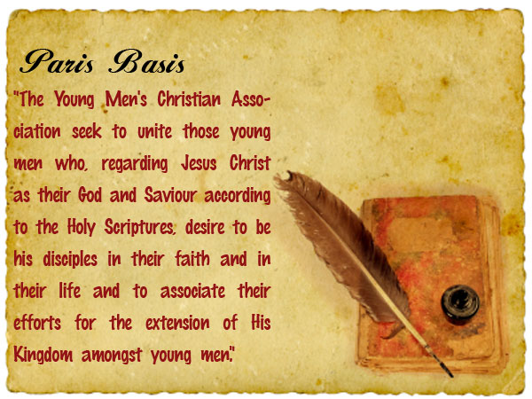
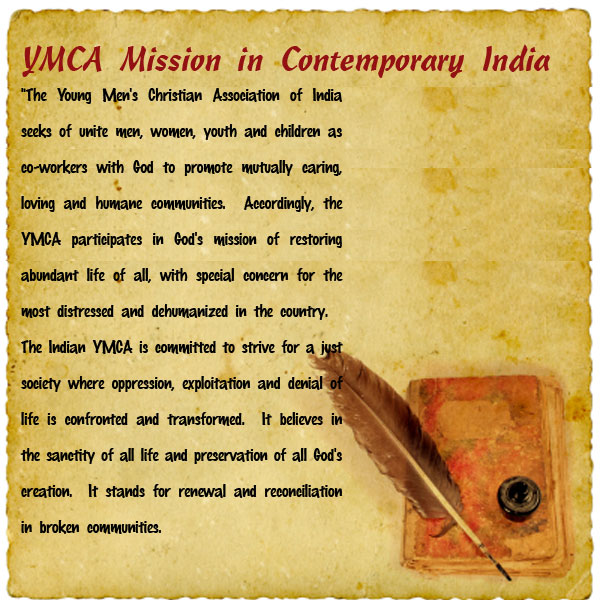

History and Growth
THE GENESIS OF THE YMCA MOVEMENT
The YMCA Movement originally began in post-Industrial England of 19th century in London in the drapery establishment of M/s Hitchcock and Rodgers in which a young apprentice of 21, George Williams, took initiative in organizing Bible classes in his bedroom in the nature of a mutual edification society which brought in a cohesive group of twelve of his co-workers in the establishment from nearly as many denominations of the Christian church to form the very first Young Men’s Christian Association on June 6, 1844 on 72, St. Paul’s Churchyard (destroyed during aerial bombings in World War II though, a memorial plaque still remains today at the site where the original building stood). The first World Conference of the YMCAs took place in Paris in August 1855 which enacted the foundational principles of the Movement, the Paris Basis. The historic statement defined the basis for membership.
The march of time saw the World YMCA Movement providing a more contemporary interpretation to the Paris Basis in the Kampala Principles of 1973 and in the Asian context this was further redefined contextually as the Manila Declaration of 1977. In 1998, at the XIVth World Council of YMCAs in Frechen, Germany, the World YMCA Movement enunciated the “Challenge 21” statement of affirmation. The YMCA movement is the oldest largest lay, Christian, ecumenical, membership movement in the world spread across 12000 local associations in 125 countries with 45 million members.

THE ORIGINS OF THE YMCA MOVEMENT IN INDIA
The YMCA tradition is not new to India. Way back in 1857 synchronous with the First War of India’s independence, the very first YMCA in Asia took roots in the-then Calcutta, the second Capital of the British Empire. In 2007 the Indian YMCA movement joined the YMCA Calcutta in celebrating the 150 years of the YMCA in India. The National Council of YMCAs of India was formed on Madras on February 21, 1891 through the initiative of David McConaughy, who also became the first National Secretary of what then was called the Indian National Council of YMCAs, the forerunner of the National Council of YMCAs of India. The national headquarters shifted to 5, Russell Street in May, 1902 and in 1964, it finally shifted to the old one-storey Massey Hall where it was located till 1975 with the very last relocation thereafter till date in the three-storeyed Bharat Yuvak Bhavan on Jai Singh Road, New Delhi-110001 in 2002.
YMCA CALCUTTA AND THE EARLY BEGINNINGS
The YMCA in India took roots in what is now Kolkata, way back in 1857, though a beginning was made in August 1854. On February 27, 1857, the Calcutta Christian Juvenile Society of 1822 formed by John Lawsan, a Baptist Missionary associated with William Carey, changed its name to Calcutta Calcutta YMCA . This was the beginning of the very first YMCA in Asia to be followed by the one in Colombo, Trivandrum, Bombay, Madras and several others. By the 1880s there were several YMCA's in South India. In 1890, David McConaughy, a young American from the International Committee of the American YMCAs arrived in Madras and founded the very first YMCA there. He was later instrumental in forming the Indian National Council of YMCAs, the forerunner of the National Council of YMCAs of India, after a conference in 1891. The National Council of YMCAs of India is the apex body of the Indian YMCAs entrusted with guiding and overseeing in general the activities of its affiliated associations and providing a direction to the Indian YMCA Movement as a whole.
THE GENESIS OF THE NATIONAL COUNCIL OF YMCAs OF INDIA
David McConaughy convened an All-India Convention of the then 35 local associations along with a few smaller associations set up in the London Mission area of Travancore by lay Missionaries, Dr. E. Sherwood Fry of Neyyoor. The Convention, during February 20-21, 1891 at the Madras Association of the YMCA in Esplanade adopted a Resolution for constituting a National Council. The first Indian National Committee comprised 17 persons. The headquarters for the National Committee was in Madras for one year and the Convention unanimously elected Mr. S. Sathianadhan as Chairman, W.R. Arbuthnot as Hony. Treasurer and David McConaughy as its first Secretary. The national headquarters was situated in Calcutta between 1891 and 1964 at 9, Russell Street and later at 5, Russel Street, finally shifting to New Delhi in 1964 at Bharat Yuvak Bhawan, 1, Jai Singh Road. The National Council celebrated its centenary in 1991. The first Indian Bishop V.S. Azariah was the first Indian YMCA Secretary and K.T. Paul OBE, an associate of the Mahatma Gandhi, the first Indian National General Secretary in 1916
SPREAD OF THE INDIAN MOVEMENT
The India YMCA Movement has 588 affiliated and 450 non-affiliated local associations across nine Regions of the country with the membership standing at around 2 lakhs, comprising both men and women. There are at present 140 YMCA Professional on the national cadre of Secretaries in India. The Indian YMCA is the second largest network of YMCAs in the world next only to the USA and is an affiliate of the World Alliance of YMCAs and the Asia & Pacific Alliance of YMCAs which groups 27 member-movements. The Indian YMCA is a Christ-centred, youth-focused and mission-oriented movement. The YMCA mission in contemporary India was defined and adopted at the XXIXth National Triennial Convention of the National Council of YMCAs of India at Madurai, Tamil Nadu in 1998.
